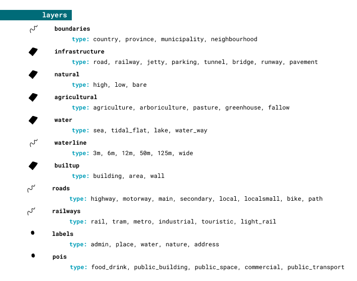

Building a national vector tile set
by: Steven Ottens - @stvno
webmapper.github.io/foss4g2019
Webmapper
Utrecht, the Netherlands
Data - Design - Technology
1:50 000
1:25 000
Lots of Data
Beautiful maps
Fast
Simple
Accurate
Consistent
Six Color Map
water
natural
rural
urban
roads
labels
Consistency


across zoom levels
across source data
11³
11³
Lots of Beautiful maps
Lots of Beautiful maps
maps
tiles
data
Simple datamodel
github.com/webmapper/cartiqo-documentation
Simple datamodel

Open Zoomstack - Ordnance Survey
Map the source data
----------NATURAL--------------------
--high
INSERT INTO cartiqo.natural_5_6_uo (type, geom, originalId)
select 'high', st_multi(geometrie_vlak_3857), gml_id
from top1000.terrein where typelandgebruik = 'bos';
--bare
INSERT INTO cartiqo.natural_5_6_uo (type, geom, originalId)
select 'bare', st_multi(geometrie_vlak_3857), gml_id
from top1000.terrein where typelandgebruik = 'zand';
flatten your data
storage is cheap!
⁂ SQL is your friend ⁂not quite
pick a vector tile engine
☑ postgres backend
tippecanoe osm2vectortiles☑ S3 cache
geoserver t-rex tilelive⁂ Tegola is your friend ⁂
Mapproxy inspired
providers - maps - caches
[[providers.layers]]
name = "natural56"
sql = "SELECT ... ST_AsBinary(geom) AS geom
FROM cartiqo.natural_5_6 WHERE geom && !BBOX!"
[[maps.layers]]
provider_layer = "cartiqo.natural56"
min_zoom = 2
max_zoom = 6
name = "natural"
[cache]
type="s3"
bucket="mybucket"
Prepare for tiles
CREATE TABLE cartiqo.natural_5_6 AS
SELECT * FROM cartiqo.natural_5_6_uo
ORDER BY ST_GeoHash(ST_Transform(ST_Envelope(geom),4326),10)
COLLATE "C";
CREATE INDEX cartiqo_natural_5_6_geohash
ON cartiqo.natural_5_6
(ST_GeoHash(ST_Transform(ST_Envelope(geom),4326),10));
CLUSTER cartiqo.natural_5_6 USING cartiqo_natural_5_6_geohash;
CREATE INDEX cartiqo_natural_5_6_geom
ON cartiqo.natural_5_6 USING gist (geom);
$ ./tegola cache seed --bounds "4.5,50.0,5.5,52.0" --concurrency 12
Did I mention fast?

Content Delivery Network (CDN)
A [...] CDN is a geographically distributed network of proxy servers and their data centers. The goal is to provide high availability and high performance by distributing the service spatially relative to end-users.
üöÄ
Enables web speed
üöÄ
gzip encoding - native tegola
cache-headers - tegola config
access_control_list="public-read"
cache_control="public, max-age=604800"
multiple subdomains - CDN config

let's talk updates
$ ./tegola cache seed --bounds "4.5,50.0,5.5,52.0" --overwrite
$ ./tegola cache seed --tile-list="list.txt" --max-zoom 15 --overwrite
Lots of Data
updating be like
We cheat
nlextract
government data, but:
as postgres dumps
with stable URLs
& still regularly updated
Automate
curl --silent --head "$url" # some fancy bash follows here
if [ $theirdate -gt $ourdate ]; then
# there is a newer file on the server, lets run the scripts
./run.sh $url $theirs
else
echo "No newer version of "$file"; currently at "$theirs
fi
----------NATURAL--------------------
--high
INSERT INTO cartiqo.natural_5_6_uo (type, geom, originalId)
select 'high', st_multi(geometrie_vlak_3857), gml_id
from top1000.terrein where typelandgebruik = 'bos';
--bare
INSERT INTO cartiqo.natural_5_6_uo (type, geom, originalId)
select 'bare', st_multi(geometrie_vlak_3857), gml_id
from top1000.terrein where typelandgebruik = 'zand';
update steps
- check for new open data
- import new open data
- map data to datamodel
seed --overwrite- optional bust CDN
To wrap up:
1. create a sensible datamodel
2. map your source data to that model
3. use postgis for datawrangling
4. generate tiles with Tegola
5. store them on an object store (S3)
6. serve them through a CDN
bonus: get your own [ISO 3166-1 alpha-2]extract project
Pop quiz:
Hardening formed by related elements of limited dimensions, such as, for example, clinkers and tiles.
Pop quiz:
Feature type: "barren terrain"
Physical appearance: "open pavement"